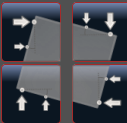

Set the probe above the desired edge 2-4 mm (the approximate position shows the colored dot on the button). Fill in the parameters. Press only! corresponding to this position button.
Then there will be two measurements, as indicated by the arrows on the button.
The parameters are set so:
(edge) length = distance between measured points
xy (clearance) = offset from the edge
z (clearance) = probe lowering distance (manually set start position 2-3 mm above material)
Auto Rot:
-if Yes, then after measuring the coordinate system will automatically rotates by the measured angle,
-if No, then the angle is simply measured and written out.
The angle is calculated relative to the X axis for the front and back faces, relative to the Y axis for the right and left faces.
After the coordinate system has been rotated, all other measurement groups will start working in a new coordinate system. You can also rotate the coordinate system at an arbitrary angle manually - type an angle in the New angle field and click the button to approve.